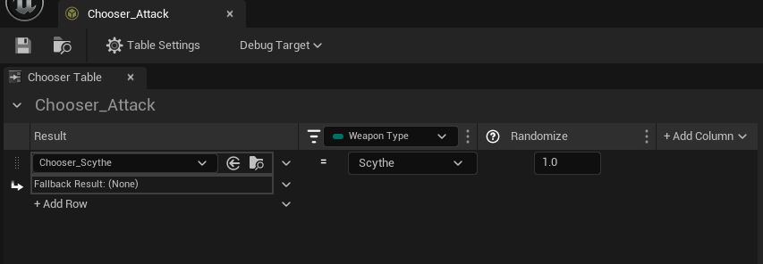

Gabriel Salomone
Gabriel Salomone
Technical 3D Animator
Chronostasis
Chronostasis is a character action game where you can fight enemies in waves using a scythe and time-stopping powers.
You can download the game here at chronostasisgame.com!
Player Animations
Here are some of the animations I made for the player character in Unreal. The attack animations were built with Root Motion in mind, and all animations start differently in the first few frames to make them feel snappier, and all end in a pose that closely resembles the animation they'll transition into for a smooth blend.
Jumping
A jump with some quick wind-up to make it feel snappy for the player.
Gap-Closer Attack
An attack meant for closing in on an opponent and doing quick damage. Anticipation frames are short, and the multi-hit attack can be canceled out if players want more control.
AOE Vicinity Attack
A close range, AOE attack meant for hitting foes that surround the player. Also short anticipation frames, and the two swipes provide enough range to give the player an air of protection against enemies. Yet, if mis-timed, the player may be open to damage.
Finisher Attack
Seemingly long winded, but serves as a cinematic end-point to the player's combo chain. Anticipation frames don't harm the player, giving a sense of "cool", and build to a satisfying resolution.
Unreal Animation Setup
For the player character's animation blueprint, I set up a blendspace for locomotion based on player input, and animation slots for when the character stops time. The wings on the player also bounce around and lag behind the player as they move around.
Set up on the player BP itself is a variable for the equipped weapon the player has, which can then be spawned on a socket on the player rig. The socket is attached to a different joint on the base rig, so the weapon can move about separately from the hands or rest of the player body.

Blender Setup
Speaking of the rigs, in Blender we made sure each character was separated into both a deform rig and control rig. Each animation is separated through the Action Editor to make easy edits, and make sure that we didn't have too much bloat by having a single file for each asset.

Weapons and Choosers
The weapon has associated abilities attached to it that determine what the player has access to. Each of these abilities has animations assigned with custom functionality related to that attack.

When the player inputs an attack or triggers one of these abilities, it first goes through a Chooser to determine which attack will be triggered when. It first goes through a base chooser asset that asks what weapon the player has equipped (currently just the scythe atm), then checks each of the related abilities within that weapon to figure out which ability can fire, which is tied to their animation montage.
